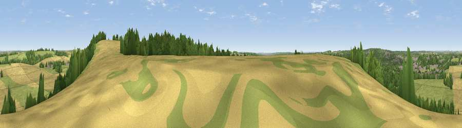

Viewpoint near Chilcomb
#23146 in England · top 19% of its area beats it · near ChilcombWhere it is
The exact computed spot (SU 49959 27471). Click the marker for map links.
The view, rendered

A 360° render of this exact spot computed from the terrain model, tree cover and land cover — summer colours, afternoon light, calibrated against photographs of famous viewpoints. Real trees, hedges and buildings will differ in detail.
The panorama
Grey silhouette: terrain skyline in each direction (720 bearings, Earth curvature and refraction included). Dashed green: skyline with trees (+15 m) and buildings (+8 m) as obstacles. Blue strip: how far the ground is visible on each bearing.
Where the view opens
Wedge length = distance to the farthest visible ground on that bearing (vegetation-aware). Rings at 10, 25 and 50 km.
What fills the view
38% grassland · 34% cropland · 21% woodland · 7% built-up
Angular shares of the visible panorama (visual magnitude), not map area. Landscape diversity 0.55 (0–1 Shannon).
Key numbers
More beautiful places nearby
The staircase of upgrades: each row has a higher view potential than everything closer. Driving times are estimates from straight-line distance, calibrated against real road routing — check an actual route before setting out.
| Place | Direction | Drive | Score |
|---|---|---|---|
| Deacon Hill | E · 1 km | ~2 min | 56.7 |
| Viewpoint near Chilcomb | ENE · 2 km | ~6 min | 63.3 |
| Beacon Hill | ESE · 11 km | ~22 min | 71.7 |
| Viewpoint near Meonstoke | ESE · 16 km | ~28 min | 74.8 |
| Viewpoint near Buriton | ESE · 23 km | ~37 min | 75.3 |
| Viewpoint near Buriton | ESE · 23 km | ~38 min | 80.0 |
| Beacon Hill | ESE · 32 km | ~50 min | 85.8 |
| Mottistone Down | SSW · 44 km | ~64 min | 87.2 |
51.04442, -1.28873 · source: osm viewpoint · position refined by local search. Computed location — check access rights before visiting.